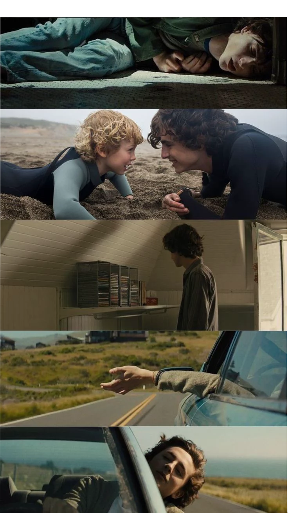

|
Beautiful boy Directed by Felix van Groeningen, Beautiful Boy is a raw, biographical drama starring Timothée Chalamet as Nic Sheff. Based on a true story, it explores the devastating impact of substance abuse on a brilliant young man and his family. The story highlights the deep bond between Nic and his father, David, while depicting the painful cycle of relapse and recovery. EMOTIONAL DEPTH AND PHYSICAL TRANSFORMATION Chalamet’s portrayal was widely praised for its vulnerability and realism. He underwent a physical transformation, losing significant weight to capture the toll of his character’s struggle. Eschewing typical clichés, Chalamet focused on the complex emotions of desperation and manipulation, anchored by a powerful on-screen chemistry with co-star Steve Carell. AWARDS AND INDUSTRY IMPACT This role earned Chalamet major award nominations, including the Golden Globe, SAG Award, and BAFTA. Beyond the industry buzz, the performance humanized the issue of health for a global audience. Chalamet used the film’s release to champion empathy and a more compassionate understanding of the challenges portrayed. A CAREER DEFINING PERFORMANCE The film showcases Chalamet’s immense range through a non-linear timeline. He shifts seamlessly between a vibrant, artistic teen and a hollowed-out version of the same boy. This contrast solidified his status as a leading dramatic actor, bridging the gap between his indie breakout roles and his transition into massive global blockbusters. |
 |